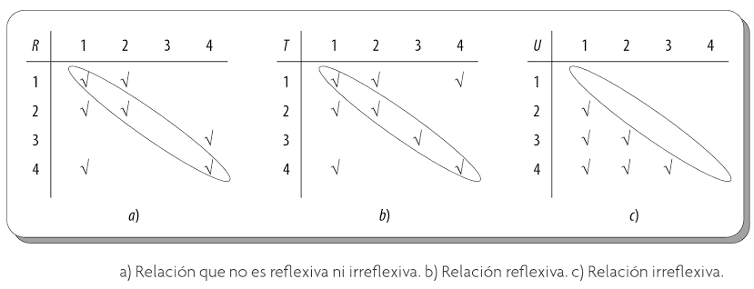
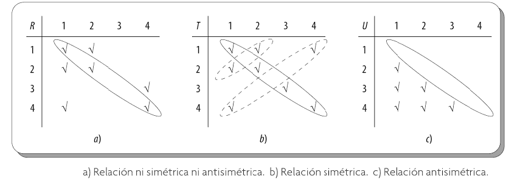
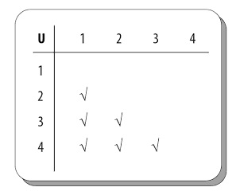

A continuación se definirán y presentarán algunos ejemplos
de las principales
propiedades de las relaciones.
Es importante destacar que dichas propiedades se utilizan, entre otras cosas,
para clasificar las relaciones sobre un conjunto determinado.
Primero ,se definen algunas
relaciones que serán útiles a lo largo
de este subtema.
Sean el conjunto A= {1,2,3,4} y las siguientes relaciones sobre A:
R= {(1,1), (1,2), (2,1), (2,2), (3,4), (4,1), (4,4)}
S= {(1,1),(1,2),(2,1)}
T= {(1,1),(1,2),(1,4),(2,1),(2,2),(3,3),(4,1),(4,4)}
U= {(2,1),(3,1), (3,2),(4,1), (4,2), (4,3)}
V= {(1,1), (1,2), (1,3), (1,4), (2,2), (2,3), (2,4), (3,3), (3,4), (4,4)}
W= {(3,4)}
Reflexiva o Idéntica
Definición .-
A la relación R sobre un conjunto A se le conoce con el nombre de reflexiva; esto es, si(a,a) ∈R, ∀α ∈ A. Se expresa de manera formal como sigue:
R es reflexiva ≡ ∀a (α R α)
Lo anterio significa que para que una relación R sea reflexiva debe contener todos los elementos del conjunto A
relacionados consigo mismos en R.
Ejemplo 2.6.1:
En este caso, T y V son reflexivas, ya que todos los pares ordenados de la forma (a,a)∀a ≡ A son elementosde T o de V, respectivamente; es decir, (1,1),
(2,2), (3,3), (4,4) son elementos de T o de V.
Irreflexiva
Definición .-
A la relación R sobre un conjunto A se le conoce como
irreflexiva si (a,a)∉ R, ∀a ∈A;
este tipo de relación se expresa de manera formal como sigue:
R es irreflexiva ≡∀a (a R a)
Entonces, para que una relación sea irreflexiva no debe contener ninguno de los elementos del conjunto A
relacionados consigo mismos en R.
Ejemplo 2.6.2:
En este caso, U y W son irreflexivas, ya que ninguno de los pares ordenados de la forma (a,a)∀a ∈ A son elementos de U o de W; esto es:
(1,1),(2,2),(3,3) y (4,4) no son elementos de U o de W.
Por medio de tablas es fácil reconoces o determinar cuándo una relación es reflexiva o irreflexiva, basta con observar la diagonal principal de las mismas.
En el caso de que en la tabla todos los elementos de la diagonal estén marcados, se puede asumir que la relación es reflexiva;
por el contrario, si ninguno de los elementos de la diagonal está marcado, entonces se asume que la relación es irreflexiva. Pero, si en la tabla solo
algunos de los elementos de la diagonal están marcados, entonces se considera que la relación no es reflexiva ni irreflexiva.

En las matrices de relación, si la diagonal principal tiene exclusivamente unos, representa una relación reflexiva; en caso contrario, si la diagonal tiene exclusivamente ceros
representa una relación irreflexiva.
Simétrica
Definición .-
Una relación R sobre un conjunto A es simétrica si ∀(a,b) ∈ R, lo que implica que (b,a) ∈ R.
La relación simétrica se expresa de manera formal como:
R es simétrica ≡ ∀a∀b, (a R b ⇒ b Ra )
Entonces para que una relación R sea simétrica, todo par ordenado de R debe tener su inverso.
Ejemplo 2.6.3:
En este caso, S y T son simétricas, ya que todo par ordenado (b, a)
es elemento de S o de T siempre que (a, b) sea elemento de S o de T,es decir,
cada par ordenado de S o T tiene su inverso.
Antisimétrica
Definición .-
Una relación R sobre un conjunto A es antisimétrica si (a,b) ∈ R y (b,a) ∈ R entonces a=b, ∀a, ∀b, ∈A.
De manera formal, una relación antisimétrica se denota como:
R es antisimétrica ≡ ∀a∀b, (a R b ∧ b Ra ⇒ a =b )
Pero , si todavia queda duda, para que una relación R sea antisimétrica ningún par ordenado de esta debe tener su inverso;
por tanto, hay que olvidarse de los pares ordenados de la forma (a,a).
Ejemplo 2.6.4:
La relaciones antisimétricas son U, V y W, ya que en estas no hay pares elementos (a,b) con a≠b, tales que 8a, b) sean elementos de U, V o de W y
(b, a) sean elementos de U, V o de W; es decir, ningún par ordenado de U, V o de W tienen su inverso, sin considerar a los pares ordenados de la forma (a,a).
Gracias a las tablas es posible identificar con rápidez este tipo de relaciones. En este caso, aquí no deben importar los elementos de la diagonal, pues estos únicamente sirven como un eje de simetría, para
verificar si cada par ordenado de la relación tiene su respectivo inverso.
En el caso de que la relación tenga la propiedad de simetría, todo par ordenado tiene su inverso, o sin ningún
par ordenado tiene su inverso, esto en el caso de que la relación tenga la propiedad de antisimétria.
No obstante, támbien puede darse el caso de que la relación no sea ni simétrica ni antisimétrica; en este caso, solo algunos elementos tendrán su inverso.

Transitiva
Definición .-
Una relación R sobre un conjunto A recibe el nombre de transitiva si(∀a∀b,a∀c) ∈ R ∧ (b,c) ∈ R, esto es, (a,c) ∈ R.
De manera formal esta se denota como:
R es transitiva ≡ ∀a∀b ∀c (a R b ∧ b R c ⇒ a R c )
Ejemplo 2.6.5:
Es este caso, se puede comprobar de U, V y W son relaciones transitivas, ya que si (a, b) son elementos de U, V o de W
y (a, b) son elementos de U, V o de W; entonces (a,c) U,V o de W, respectivamente.
La relación transitiva se representa en una tabla como se muestraa a continuación:

Se sabe que la relación U es transitiva puesto que:
(3,2) ∈ U y (2,1) ∈ U ⇒ (3,1)∈ U
(4,2) ∈ U y (2,1) ∈ U ⇒ (4,1)∈ U
(4,3) ∈ U y (3,1) ∈ U ⇒ (4,1)∈ U
(4,3) ∈ U y (3,2) ∈ U ⇒ (4,2)∈ U
Para comprobar la condición de transitividad de una relación como pares ordenados, hay que tener en cuenta si a=b
y si (a,b)∈ R ⇒ (b,c) ∈ R, entonces (a,c) ∈ R; en este caso, (a,c)=(b,c). Si b=c y (a,b)∈ R
⇒ (b,c)∈R, entonces (a,c)∈R; en este caso, (a,c)=(a,b), por lo que no hay que verificar
de manera explícita toda la condición en dichos casos.
Para comprobar la condición de transitividad, primero hay que eliminar los casos a=b y b=c y luego
solo hay que verificar los pares ordenados restantes. Esto ahorrara una gran cantidad de comparaciones.
Ejemplo 2.6.7:
Ejemplo para todas las relaciones:
Cuando tenemos la matriz de una relación es muy fácil verificar si es Reflexiva, Irreflexiva, Simétrica, Antisimétrica, Transitiva:
Sea A = { a, b, c, d, e }
R1 = { (a,a), (b,b), (a,c), (b,c), (c,a), (d,d) }
R2 = { (a,a), (a,d), (c,b), (d,a), (c,e), (e,e) }
R3 = { (a,a), (b,b), (c,c), (d,d), (e,e), (b,c), (b,a) }
R4 = { (a,a), (a,b), (b,a), (b,b), (b,c), (b,e), (c,e), (b,d), (d,a), (e,e) }
R5 = { (a,c), (a,e), (e,c), (b,c) }
R6 = { ( (a,a), (b,b), (c,c), (d,d), (e,e), (a,e), (b,c), (c,b), (e,a) }
R7 = { (a,b), (b,d), (c,a), (d,e), (e,c), (b,c), (b,a) }
Si observamos podemos darnos cuenta que R3 y R6 son Reflexivas, y también podemos ver que R5 y R7 son Irreflexivas.
De las relaciones anteriores R6 es simétrica, R3 y R5 son antisimétricas; R3, R4 y R5 son Transitivas.